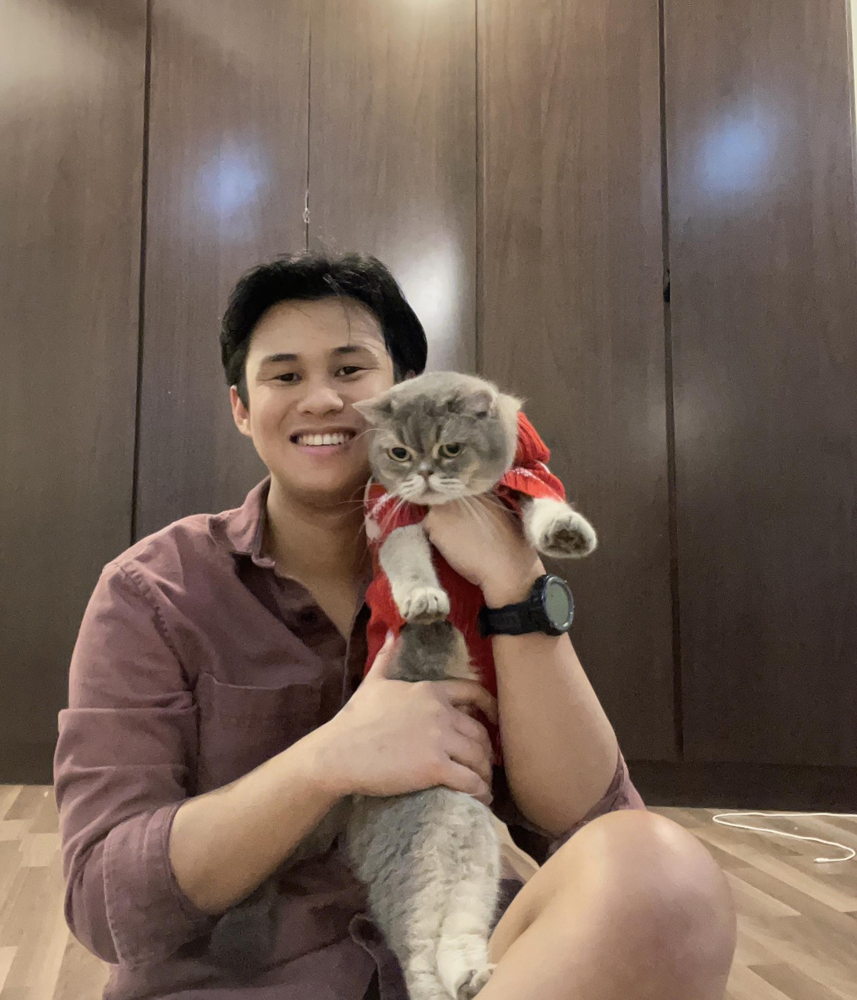

Software Developer & Loving Cat Dad
Technical Skills:
HTML5, CSS3, Javascript, PHP
NodeJS, ExpressJS, React, ReactNative, MongoDB
Wordpress, Templating Engines (EJS, Pug)
Progressive Web Apps, AWS Cloud Infrastructure, Heroku, Render
NodeJS, ExpressJS, React, ReactNative, MongoDB
Wordpress, Templating Engines (EJS, Pug)
Progressive Web Apps, AWS Cloud Infrastructure, Heroku, Render
Hi, I'm Bernard, a passionate and dedicated web developer with a knack for creating sleek, functional, and user-friendly websites and mobile applications. I specialize in bringing your digital visions to life through innovative design and robust development practices. Whether you need a stunning portfolio, a dynamic e-commerce platform or a custom web application, i'm all ears and hands in bringing to reality your visions. Let's build something great together!
I am now also working on a personal project that has been buzzing in my head for the past 2 years i.e to build a platform for artisans and crafts people to connect and grow their community, showcase their work and interact with other like minded individuals. Finger crossed on deployment of the production ready app in its earliest version, the application can grow and develop into a startup here in Penang.
More about me, I was born and raised in Penang, Malaysia. I graduated with a Bachelor of Laws Degree (LLB) from the University of London in 2018. During my time studying and reading for the Legal Bar (the infamous CLP) to obtain the relevant practicing certificate to be a qualified legal practitioner, I came to a consensus that the bulk of the materials i was reading would be redundant in the coming decade with the advent of technological progress. Couple with the spirit of youth and adventure and inspiration from the movie that was huge at the time, The Social Network, my whole life trajectory took a rather bizarre turn towards the unordinary, away from the norm. I wanted to be an tech entrepreneur.
I dropped out from law school and began learning how to program. My first exposure to the world of computers was from Harvard CS50 - Introduction to Computer Science. I later shifted to a more hands on approach in my learning adventure by writing my first
"Hello World" with C++. With all honesty, I was this blind bat trying to navigate and hike this giant mountain. Most of the time, I was lost and had no idea what I was doing. I hit a breakthrough when I stumble upon web frameworks and the dots started connecting. I got myself this wonderful book by Marijn Haverbeke titled "Eloquent Javascript" and JS became the new language of choice. The Christopher Columbus in me began sailing towards more and more sea of knowledge and far unknowns leading to discoveries of new worlds that led me towards learning NodeJs, React, React Native for mobiles and ultimately, DevOps within the AWS infrastructure. A little more about me, I'm also a proud cat dad. I love outdoors and find joy in being with nature. I love to cycle and occasional camping be it on the hills or on a beach somewhere. That said, i'm open to connections and new friendships. Don't be shy, reach out to me! Also, I love to cook and experimenting with food as well.